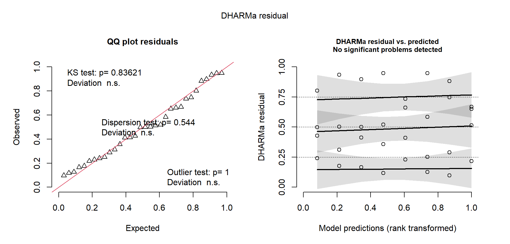

Aula 62. Modelos Mistos
Efeitos fixos x aleatórios, do aov ao lmer, em um único experimento
Acompanhe o Café com R
Que cada gole desperte uma nova ideia.
Que cada script abra uma nova conversa.
Que o Café com R se torne um ponto de encontro nosso.
SITE OFICIAL > https://jenniferlopes.github.io/meu_site/
Objetivos da aula
- Distinguir efeitos fixos de efeitos aleatórios
- Ajustar um modelo misto com
lme4, tratando o bloco como efeito aleatório - Extrair e interpretar os componentes de variância do modelo
- Diagnosticar resíduos de um modelo misto com
DHARMa - Obter significância com
lmerTeste comparar médias comemmeans
Bloco 1
Fixos x Aleatórios
Conceito, efeitos fixos x efeitos aleatórios
Um efeito fixo representa níveis específicos, de interesse direto para comparação, geralmente escolhidos deliberadamente, como os genótipos que se deseja avaliar.
Um efeito aleatório representa níveis amostrados de uma população maior de níveis possíveis, de interesse não em si mesmos, mas como fonte de variação a ser contabilizada.
Contexto: 8 genótipos de milho são avaliados em um Delineamento em Blocos Casualizados, com 4 blocos, em um único local.
Quando um fator deve ser aleatório
O bloco de um experimento é, tipicamente, uma amostra de condições ambientais possíveis, não um conjunto de níveis cuja identidade específica interessa por si só, o bloco 2 não é mais interessante de estudar que o bloco 3, apenas representa uma condição ambiental particular.
Essa é a justificativa conceitual para tratar bloco como efeito aleatório, uma prática cada vez mais comum mesmo quando o número de blocos é moderado.
Bloco 2
Do aov ao lmer
Conceito, bloco fixo x bloco aleatório no DBC
Quando o bloco é tratado como efeito fixo, cada nível de bloco recebe uma estimativa própria e independente, como em qualquer outro fator do modelo clássico.
Quando o bloco é tratado como efeito aleatório, suas estimativas sofrem um encolhimento em direção à média geral, chamado shrinkage, proporcional à quantidade de informação disponível, o que tende a produzir estimativas mais estáveis para os efeitos fixos de interesse, os genótipos.
Código: ajuste tradicional com aov()
Código: ajuste com lme4::lmer(), bloco aleatório
Output: comparação dos dois ajustes
# A tibble: 3 × 6
fonte_variacao Df `Sum Sq` `Mean Sq` `F value` `Pr(>F)`
<chr> <dbl> <dbl> <dbl> <dbl> <dbl>
1 "bloco " 3 445. 148. 2.46 0.0906
2 "genotipo " 7 4146. 592. 9.84 0
3 "Residuals " 21 1264. 60.2 NA NA # A tibble: 8 × 2
termo estimativa
<chr> <dbl>
1 (Intercept) 205.
2 genotipoG2 -24.5
3 genotipoG3 -14.9
4 genotipoG4 -6.15
5 genotipoG5 -20.7
6 genotipoG6 -40.5
7 genotipoG7 -20.4
8 genotipoG8 -20.0 - Os efeitos fixos de genótipo no modelo misto são estimados de forma condicional ao efeito de bloco, tratado agora como componente de variância, não como conjunto de parâmetros individuais estimados diretamente como no
aov().
Bloco 3
Componentes de Variância
Conceito, variância entre blocos x variância residual
- Um modelo misto decompõe a variabilidade total em componentes atribuíveis a cada efeito aleatório, e ao resíduo, cada um expresso como uma variância estimada, não como uma soma de quadrados de um efeito fixo.
Código: VarCorr()
Output e interpretação
# A tibble: 2 × 3
grp vcov sdcor
<chr> <dbl> <dbl>
1 bloco 11.0 3.32
2 Residual 60.2 7.76- A variância entre blocos é relevante em relação à variância residual, confirmando que o bloco contribui de fato para explicar parte da variação total, justificando sua inclusão explícita no modelo.
Bloco 4
Diagnóstico do Modelo Misto
Código: simulateResiduals() para lmer
Gráfico e leitura

- O
DHARMafunciona da mesma forma para modelos mistos ajustados comlmer, oferecendo o mesmo painel de diagnóstico visto na aula de pressupostos, agora aplicado a um modelo com estrutura de efeitos aleatórios.
Bloco 5
Significância em Modelos Mistos
Por que não há F exato simples
Em um modelo misto, os graus de liberdade do denominador do teste F não têm uma fórmula fechada simples como no
aov(), pois dependem da estrutura de efeitos aleatórios do modelo.Métodos de aproximação, como Satterthwaite ou Kenward-Roger, estimam esses graus de liberdade de forma a produzir testes com propriedades estatísticas adequadas mesmo nessa estrutura mais complexa.
Código: lmerTest
Output
# A tibble: 1 × 7
termo `Sum Sq` `Mean Sq` NumDF DenDF `F value` `Pr(>F)`
<chr> <dbl> <dbl> <dbl> <dbl> <dbl> <dbl>
1 genotipo 4146. 592. 7 21 9.84 0- O pacote
lmerTestadiciona aolme4a aproximação de Satterthwaite por padrão, fornecendo diretamente o valor de p para o teste F de genótipo, algo que olme4sozinho não calcula.
Bloco 6
Comparação de Médias
Código: emmeans com modelo misto
Output
# A tibble: 8 × 7
genotipo emmean SE df lower.CL upper.CL .group
<fct> <dbl> <dbl> <dbl> <dbl> <dbl> <chr>
1 G6 165. 4.22 20.6 152. 178. " a "
2 G2 181. 4.22 20.6 168. 194. " ab "
3 G5 185. 4.22 20.6 172. 198. " b "
4 G7 185. 4.22 20.6 172. 198. " b "
5 G8 185. 4.22 20.6 173. 198. " b "
6 G3 191. 4.22 20.6 178. 203. " bc"
7 G4 199. 4.22 20.6 186. 212. " bc"
8 G1 205. 4.22 20.6 193. 218. " c"- O
emmeansfunciona de forma direta sobre modelos ajustados comlmerTest::lmer(), aplicando a mesma aproximação de graus de liberdade usada no teste F para as comparações par a par.
Bloco 7
Quando Usar Cada Abordagem
Tabela de decisão
| Situação | Abordagem indicada |
|---|---|
| Poucos níveis de bloco, interesse específico em cada nível | Modelo fixo tradicional, aov() |
| Bloco como amostra de condições ambientais, sem interesse individual nos níveis | Modelo misto, bloco aleatório |
| Estrutura de blocos incompletos, com recuperação de informação entre blocos | Modelo misto, quase sempre preferível |
| Múltiplos fatores aleatórios cruzados ou aninhados | Modelo misto, lme4 ou glmmTMB |
Bloco 8
Erros Comuns
Erro comum 1, tratar bloco como fixo quando deveria ser aleatório
- Manter o bloco como efeito fixo por hábito, mesmo quando ele representa claramente uma amostra de condições ambientais, deixa de aproveitar o ganho de precisão que o tratamento como efeito aleatório costuma proporcionar às comparações de interesse.
Erro comum 2, usar lmer sem variância suficiente entre níveis do fator aleatório
- Com poucos níveis de um fator aleatório, tipicamente menos de 5, a estimativa da variância desse efeito pode ser instável, produzindo ajustes com aviso de singularidade, chamado “singular fit”, situação em que a variância estimada tende a zero.
Erro comum 3, interpretar efeito aleatório como estimativa de efeito fixo individual
- Os valores previstos para os níveis de um efeito aleatório, os BLUPs, sofrem o encolhimento discutido no Bloco 2, e não devem ser interpretados, relatados ou comparados par a par da mesma forma que se interpreta um efeito fixo estimado diretamente.
Resumo: modelos mistos
| Elemento | Função no R |
|---|---|
| Ajuste do modelo misto | lme4::lmer() |
| Componentes de variância | VarCorr() |
| Diagnóstico de resíduos | DHARMa::simulateResiduals() |
| Teste F com graus de liberdade aproximados | lmerTest::lmer(), anova() |
| Comparação de médias | emmeans::cld() |
Obrigada!

Continue praticando e explorando.
Esta aula é parte do projeto Café com R. É open source. Use, compartilhe e adapte.
Siga o Café com R
Que cada gole desperte uma nova ideia.
Que cada script abra uma nova conversa.
Que o Café com R se torne um ponto de encontro nosso.
SITE OFICIAL > https://jenniferlopes.github.io/meu_site/

Jennifer Lopes | Café com R